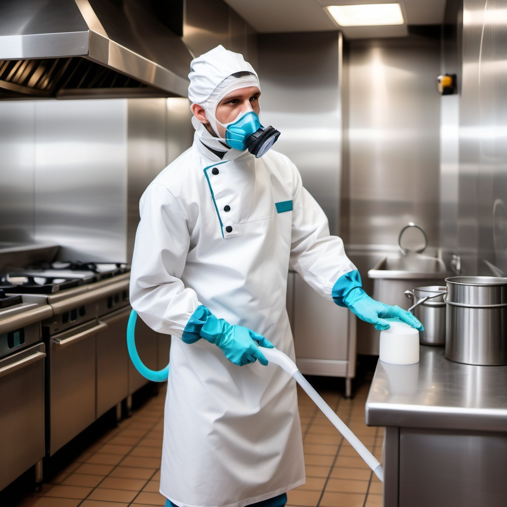

Misioni
Të kontribuojë në higjienën dhe sigurinë e ambienteve përmes shërbimeve të dezinfektimit, dezinsektimit dhe deratizimit.
AgroConsulting Plus
Një ekip profesionistësh i përkushtuar për pastërtinë, sigurinë dhe mirëqenien e ambientit, si dhe për mbështetjen e bizneseve agrare.

Kujdes për ambientin tuaj
Dezinfektim, dezinsektim dhe deratizim
Fushat e veprimtarisë
Kush jemi ne?
AgroConsulting Plus është një ekip profesionistësh i përkushtuar për pastërtinë, sigurinë dhe mirëqenien e ambientit. Kompania ofron shërbime të specializuara për dezinfektim, dezinsektim dhe deratizim, me fokus në eliminimin e baktereve, viruseve, insekteve të dëmshme dhe brejtësve.
Për agrobizneset dhe fermerët, AgroConsulting Plus ofron asistencë për përfitimin e granteve dhe subvencioneve, si dhe për hartimin e planeve të biznesit. Kështu, veprimtaria e kompanisë ndërthur shërbimet higjienike me mbështetjen për nismat bujqësore.
Njihuni me shërbimetDrejtimi ynë
Përmbledhje e fokusit dhe drejtimit të kompanisë, bazuar në shërbimet e publikuara. Këto formulime nuk janë citime të deklaratave zyrtare.
Të kontribuojë në higjienën dhe sigurinë e ambienteve përmes shërbimeve të dezinfektimit, dezinsektimit dhe deratizimit.
Të mbështesë zhvillimin e agrobizneseve dhe fermerëve përmes asistencës për plane biznesi, grante dhe subvencione.
Çfarë bëjmë
Shërbime për higjienën e ambienteve dhe asistencë për nismat agrare.

01 / Higjiena
Eliminimi i mikroorganizmave për një ambient të pastër dhe të shëndetshëm.
Mësoni më shumë
02 / Mbrojtja
Zgjidhje për kontrollin dhe eliminimin e insekteve të dëmshme.
Mësoni më shumë
03 / Kontrolli
Menaxhimi dhe eliminimi i brejtësve për të mbrojtur ambientin.
Mësoni më shumë
Përparësitë tona
Pikat më poshtë bazohen në informacionin e publikuar në faqen origjinale.
Faqja origjinale përmend vërtetim të nënshkruar, të disponueshëm për klientët për gjashtë muaj.
Kompania thekson shërbimet profesionale për higjienën dhe mirëqenien e ambientit.
Çmimet konkurruese dhe të arsyeshme përmenden si një nga përparësitë e kompanisë.
Mbështetje dhe konsultim për projekte dhe zhvillimin e agrobiznesit.